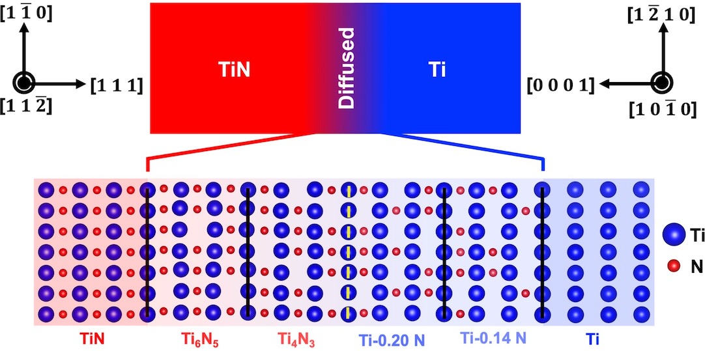
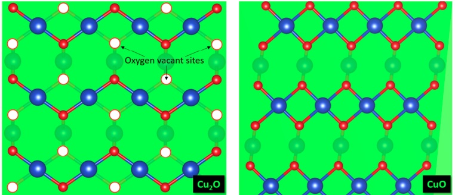
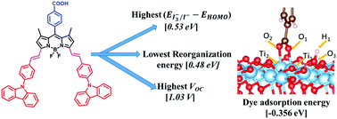

Journal Publications
You can also visit Google Scholar
- Prince Gollapalli, PSVRA Kishor, and Satyesh Kumar Yadav,
"On the Origin of Chemically Graded Metal/ Ceramic Interface", under review
arxiv, 2022, https://www.researchsquare.com/article/rs-2029238/v1
- Prince Gollapalli, J Varalakshmi, PSVRA Kishor, Prajeet Oza, and Satyesh Kumar Yadav,
"Atomically Chemically Graded Ti/TiN Interface",
Applied Surface Science, 2022, https://doi.org/10.1016/j.apsusc.2022.153637

- Aarju Mathew Koshy, A. Sudha, Prince Gollapalli, Satyesh Kumar Yadav, and Parasuraman Swaminathan,
"Annealing-induced changes in optoelectronic properties of sputtered copper oxide films",
Journal of Materials Science: Materials in Electronics, 2022, https://rdcu.be/cM51c

- Ganapathi Rao Kandregula, Sudip Mandal, Gollapalli Prince, Satyesh Kumar Yadav, and Kothandaraman Ramanujam,
"A Computational study on boron dipyromethene ancillary acceptor-based dyes for dye-sensitized solar cells",
New Journal of Chemistry 44 (12), 4877-4886, 2020, doi:10.1039/C9NJ05334D

Workshops
- Materials Project Workshop on computational materials design and discovery (virtual), Berkeley, California, July 28-30, 2020.
- Atomistic Simulations of Materials, one-week hands-on course on classical molecular dynamics, Indian Institute of Technology Delhi, India, Dec 23-27, 2019.
Conferences
- Gordon Research Conference on Computational Materials Science and Engineering, Jul 31-Aug 5, 2022, Maine, US
Poster presentation on "Chemically Graded Metal/Ceramic Interface - A High Throughput DFT Study"
- 2021 Virtual MRS Spring Meeting, April 17 - 23, 2021
Oral presentation on "Chemically Graded Metal/Ceramic Interface - A High Throughput DFT Study"
- 20th International Workshop on Computational Physics and Materials Science: Total Energy and Force Methods, Feb 23-25, 2020 (virtual)
Poster presentation on "Chemically Graded Metal/Ceramic Interface - A High Throughput DFT Study"
- 26th International Symposium on Metastable, Amorphous and Nanostructured Materials (ISMANAM-2019), July 8-12, 2019, Chennai, India
Poster presentation on "On the Origin of Chemically Graded Metal-Ceramic Interface"
Copyright © 2022 Prince Gollapalli